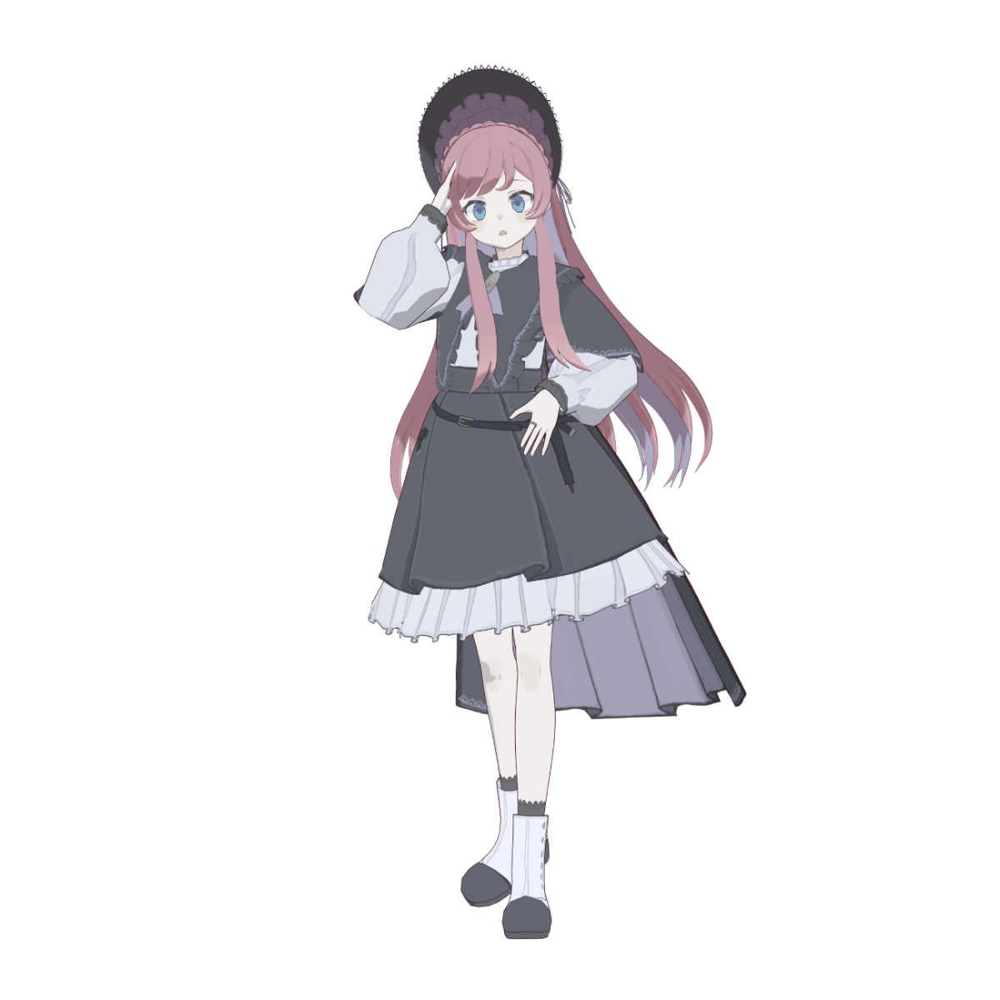
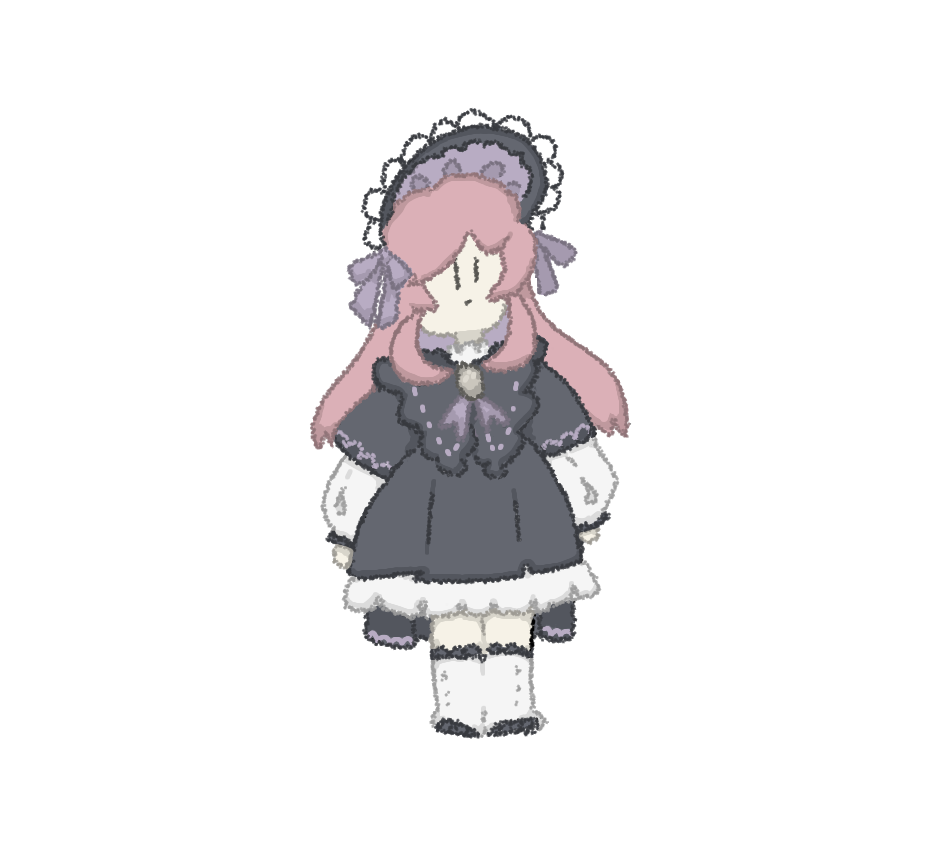
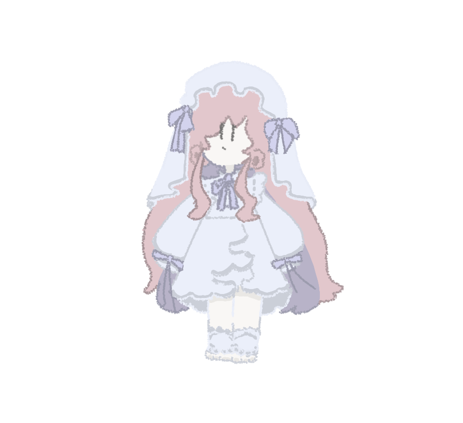
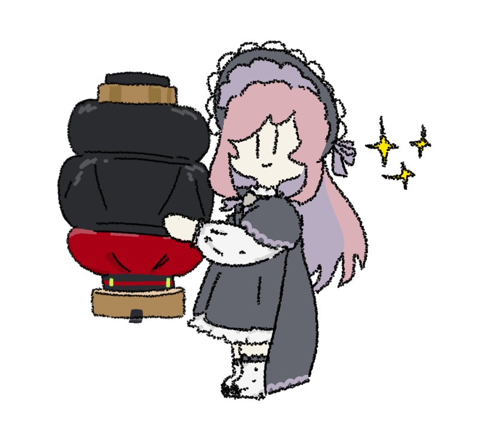

VTuber
美ヶ原みく
- 喋りながらゲームするのがだ～いすき！
- 定期的に決まった時間にゲーム配信するよ！スケジュールみてね～！
- ゴアくてグロいゲームとシミュレーター系のゲームがすき！
#美ヶ原みく
#うつくしのみく絵
#週刊みかはら
#ヌノ～と鳴くいきもの
Profile
- 誕生日
- 2月28日
- デビュー日
- 2019年12月1日
- ファンネーム
- なし
- 配信ジャンル
- ゲーム
- 配信時間帯
- 18時～20時 / 21時～24時 /
3時～6時 などなど！ - よくやるゲーム
- オープンワールドからシミュレーターゲームまで様々
- 好きなゲーム
- Fallout4、今まで遊んだゲームほとんどぜんぶ！
- 好きな飲み物
- ミルクティー
- 好きなもの
- アクセサリー、ぬいぐるみ、読書
- 好きな動物
- ねこ、うさぎ、さかな
- 配信場所
- YouTube
MASCOT
ヌノ～
ヌノ～と鳴くいきもの。
みくのそばにいつもいるよ。
みくのそばにいつもいるよ。
Links


